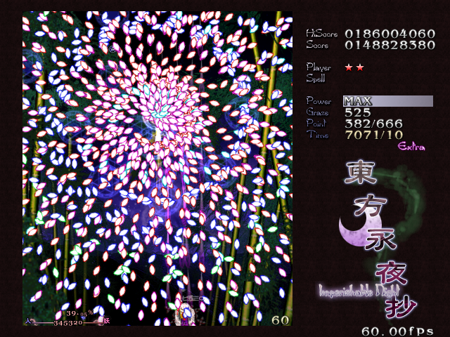

关于东方Project
东方是什么？
东方Project
（日文：東方Project（とうほうプロジェクト），英文：Touhou Project，简称：东方）
东方Project是日本同人社团上海爱丽丝幻乐团（以及和黄昏边境合作）制作的一系列同人作品，系列以清版弹幕射击游戏为主。
东方对于二次创作十分包容，因此诞生了极其庞大的二次创作社区。也因为如此，东方荣获“最多作品的同人射击游戏”这项吉尼斯世界纪录。
我该如何了解东方？
如果你喜欢动画，那么你可以看看优质的同人动画，比如《幻想万华镜》、《梦想夏乡》、《秘封活动记录》等。你可以在哔哩哔哩上搜索。
如果你是硬核玩家，那么你可以试试东方弹幕系列游戏。现已上架steam。
如果你喜欢音乐，那么你可以听听庞大的东方同人曲库。这里推荐使用网易云音乐。
如果你喜欢了解故事，你可以去看看
《猩东方》
系列。
如果你想深入了解东方，你可以访问THBWiki。
相关网站
上海爱丽丝幻乐团的官网（日文）
黄昏边境的官网（日文）
THBWiki
喵玉殿论坛
百度东方吧
哔哩哔哩
绯想天
博丽灵梦----东方Project系列中的主角之一。
 东方弹幕游戏。图为东方永夜抄Extra关道中。
 博丽灵梦----东方Project系列中的主角之一。
博丽灵梦----东方Project系列中的主角之一。
博丽灵梦----东方Project系列中的主角之一。
博丽灵梦----东方Project系列中的主角之一。